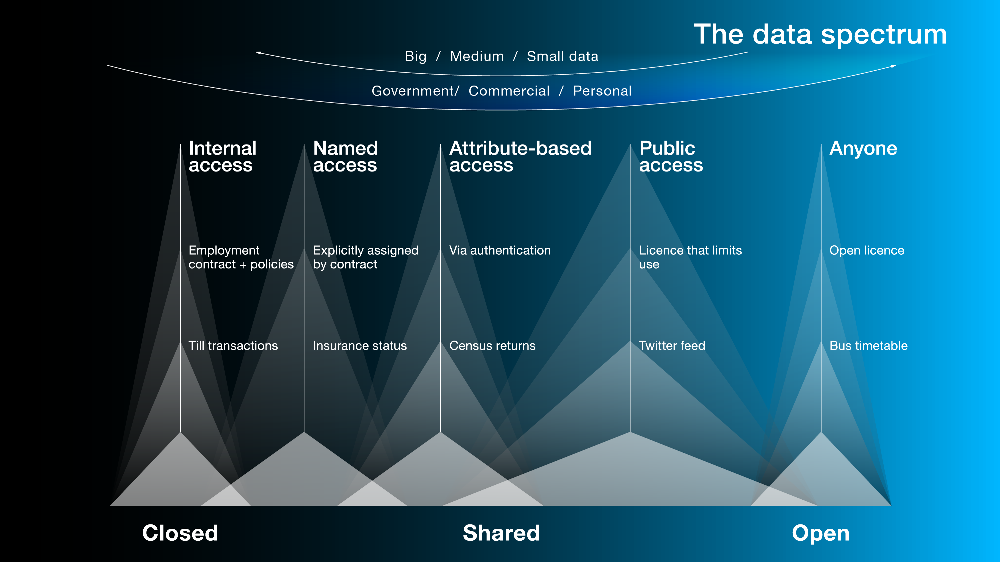
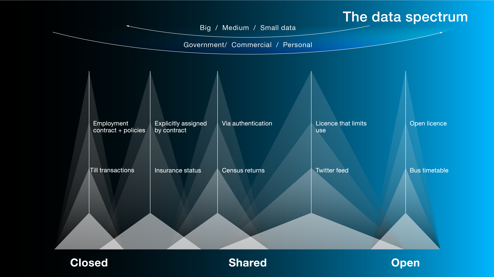

Closed, shared, open data: what’s in a name?
Introducing the 'data lexicon': Ellen Broad explores the challenge of using language around data that is accurate and useful, but simple enough for everyone to understand
For the past few months we at the ODI have been having conversations about how open data fits within both the data spectrum and our data infrastructure.
We observed that often people think of open data as a specific ‘kind’ of data – something separate and distinct from the data they use day-to-day in their organisation or team – rather than a choice about how people publish data.
This is part of the challenge both we and other organisations face in communicating ‘open data’ to wider audiences: what constitutes ‘open data’, and how does it relate to other data terms like ‘closed data’, ‘shared data’, ‘personal data’ and ‘big data’? This a challenge we face in all of our work.
The language is complex which can make it inaccessible to many people who we want to take part in the debate. Data infrastructure is as important to the digital revolution as transport infrastructure was to the industrial revolution. We want as many people as possible to be able to join the debate and understand how maximising data use benefits us all.
We are investigating whether we can openly grow a data lexicon to help solve this problem. Can we keep language around data accurate and useful while making it simpler so that more people can understand?
This is hard work but we think we’ve made enough progress to share our work so far and ask for your feedback.
The starting point: what should be in our data lexicon?
We consulted data glossaries and toolkits that already exist, assembled some draft definitions, and asked the ODI team what other data terms we’d missed.
Unsurprisingly perhaps, our draft data lexicon went from 6-8 key terms to 25 overnight. Data comes with its own vocabulary, and if you want to talk about data there are a lot of words you’ll need to know. You can access the full list of all the terms ODI team members would like to see in a data lexicon here. (Lots of these terms are already clearly defined but the definitions are technical in nature or simply not widely known.)
We have chosen to start by revisiting how we describe and show the difference between closed, shared and open data as well as providing definitions for personal and big data.
The terms closed, shared and open are commonly confused and, if you use them incorrectly, can impact public trust around data.
We’ve avoided generating new technical definitions, instead focusing on language any person on the street might understand. There are already some great technical definitions, like the Open Definition for open data, which we use in our training. What we’re trying to do is create a shorthand guide to the data spectrum to make it more useful for both ourselves and the other people that are starting to use it.
Changing how we talk about closed, shared and open
How data is made accessible and useable is a choice made by the data holder or owner. Before data is closed, shared or open, it’s just ‘data’. We are discovering that making this choice more visible helps create better debate so, rather than talking about ‘open, shared and closed data’, we are starting to use the following terms:
- data that is open
- data that is shared
- data that is closed
Describing the data spectrum
This is the first draft of the data spectrum. We used it in our internal workshop to try to shape the debate. And there was a lot of debate. Debate about scope of the data spectrum and the terms it employs, what the terms represent, and how we perceive data that is open. But the workshop has also helped us make some important observations, and raised some questions about the data spectrum, namely:
What you intend and what you communicate can place you at different points on the data spectrum
A data publisher or holder might intend data to be used by anyone, for any purpose, but not attach an open licence. Should this be at the far open end of the spectrum? A data holder may intend data to be widely available inside an organisation, but it falls under the same definition of ‘closed data’ they use for data that is purposefully restricted and securely stored. Should it be described as closed data?
To contain the scope of our definitions, we used the spectrum to describe different kinds of access to data: decisions made about who can access data and how they can use it.
The data spectrum isn’t linear – access to and use of data can be restricted in different ways across the data spectrum.
Data might be ‘shared’ with a specific class of people, but they might not be able to use it, only access it. There might be closed data inside an organisation that’s for viewing only, as well as closed data that is used in a range of internal products and services. Open data can have restrictions, like a requirement to attribute a data publisher or holder.
There are many shades on the data spectrum
By the end of our workshop, we had new draft definitions to update the data spectrum with. However, the exercise also taught us that there’s danger in trying to make things too simple, or too concise.
This is what we originally came up with:
Data that is closed
After debate about the difference between data that should not be shared – for security reasons, or because it’s personal information – and data that is simply only available to an individual, to a team or within an organisation by default, we agreed on:
"Data that can only be accessed by its subject, owner or holder."
Data that is shared
This was trickier. Having agreed that access would be the anchor for variation across the spectrum, we settled on these ‘shades’ of access:
- Named access – "data that is shared only with named people or organisations"
- Attribute-based access – "data that available to specific groups who meet certain criteria"
- Public access – "data that is available to anyone under terms and conditions that are not 'open'"
Open data
Our definition of open data didn’t change. Our one-sentence definition continues to be:
"Data that anyone can access, use and share."
For data to be considered 'open', it must be:
- Accessible, which usually means published on the web
- Available in a machine-readable format
- Have a licence that permits anyone to access, use and share it – commercially and non commercially.
Personal data
Data from which a person can be identified is personal data.
If data can be combined with other information to identify a person, that data will still be personal data.
It’s important to remember that personal data can be closed, or shared with specific people or organisations, or licensed as open data.
Nations may have legislation that explicitly defines personal data and may alter the above definition. Depending on your need, it may be necessary to refer to such legislation.
Big data
A vendor-driven term often used to describe large quantities of rapidly changing data being collected from various sources.
There is no common definition of big data.
It’s important to remember that ‘big data’ can be closed, or shared with specific people or organisations, or licensed as open data.
What we learnt: what works in principle, doesn’t always work in practice
Unfortunately, when we updated the data spectrum with our new shades of access for closed, shared and open data (along the top), they didn’t work for some of our audiences. They might even make things worse. (We did update some of our examples of data across the spectrum, however, after user feedback and those now seem more useful.)

Our mistake was trying to carve the data spectrum into precise categories. We can provide loose definitions for data that is closed, data that is shared, and data that is open – these form a framework for people working their way through the data spectrum.
Just as there are shades of shared and shades of open there are lots of shades of data that is closed: data that’s practically inaccessible, eg in paper-based form, data that’s held internally because there has never been a choice made as to whether it should be closed, shared or open, and data that’s deliberately closed and stored securely. We can’t fit all that into one-sentence definitions, but we can produce examples that make it part of the conversation that takes place around the data spectrum.
 A version of the data spectrum with simpler shades of access
The draft definitions
We’ve placed our original workshop draft definitions in this document, as well as more general definitions for data that is closed, data that is shared and data that is open. We know the debate is going to continue, and we want to hear from you.
- What definitions of data that is closed, shared and open have worked well in your experience? What edits would you make to our definitions? Add your comments here.
- What other terms would you want to see in a wider data lexicon? Add your ideas here.
We will be incorporating feedback on the definitions until 25 September. We’ll then be refining how we describe the data spectrum to make it more useful for all of us, and help more people understand and join in the debates over data and data infrastructure.
If you have ideas or experience in open data that you'd like to share, pitch us a blog or tweet us at @ODIHQ.
Ellen Broad is Policy Lead at the ODI. Follow @ellenbroad on Twitter.